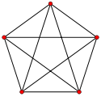

Isomorph-free exhaustive generation of graphs
A graph is a mathematical model for presenting a set of objects and relations between them. The objects and relations between them are usually visualised with some points and links (lines or arcs) between them. The points and the links are called vertices and edges in the language of mathematics. For example Facebook can be considered as a graph in which people are the vertices and there is an edge between two people if they are friend. The following image can represents a graph of 5 friends which has 5 vertices and 10 edges (each two persons are friend with each other).
There are many families of graphs like regular graphs (graphs in which each vertex is related to the same number of vertices), planar graphs (graphs which can be drawn on a plane without edge crossing), bipartite graphs (graphs whose nodes can be divided in two parts and there is no edge between any two verteices of each part and etc. Undrestanding of each family of graphs has its own theoretical and practical purposes.
Graph generation is one of the branches of combinatorics which is interesting not only for combinatorists, but also other specialists because of its wide applications in other fields like Network Design, Chemistry, Nano-Technology and Numerical Analysis. The first work on this field was done by de Veris in 1891 who was a chemist.
For a family of graphs like F we say that it can be recursively generated from a set of initial graphs and a collection of operations each of which convert some members of F to some other members of it if:
- Any of the initial graphs are in the family.
- Any graph in the family can be constructed from an initial graph with some applications of the operations.
- Tom, Jack and Michelle are friends while Boris is just friend with Tom.
- Boris, Tom and Jack have seen Paris. Boris and Jack also have visited Rome.
- There is a direct flight between any two of Sydney, Tokyo and Beijing but the only direct flights to Canberra is from Sydney.
- Tom, Jack, Michelle and Boris are objects while friendship is relation between them.
- Tom, Jack, Michelle and Boris are objects while two of them are related if both of them have seen a city.
- Sydney, Tokyo, Beijing and Canberra are objects while two of them are related if there is a direct flight between them.
Graph 1
Graph 2

Graph 3
Isomorph-free exhaustive generation of a family graphs means generating the entire (exhaustive) family of those graphs in a way that no pair of the generated graphs are isomorphic. The importance of isomorph-free generation that as a model there is no difference between two isomorph graphs so having isomorph graphs is redundant and also generally a graph, specially the big ones, can have exponentially so many isomorph versions (even with a fixed set of possible labels). So practically having so many redundant data can make the generation algorithm useless.
- I have a set of some families of graphs which are generated using computer.
- I am working on a online lab for graphs called Graph Lab.